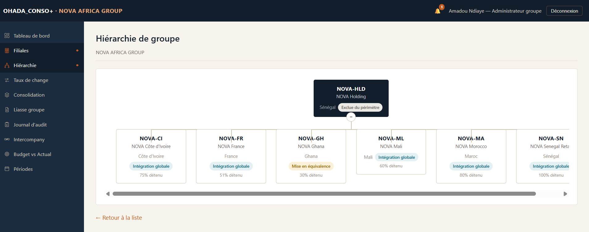
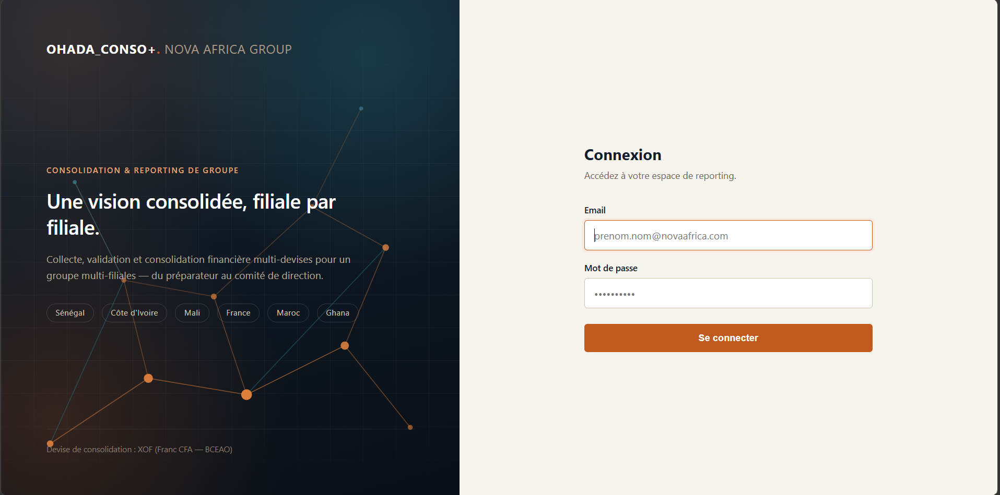
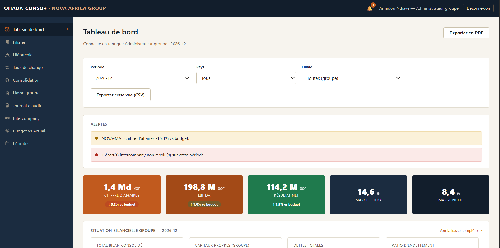
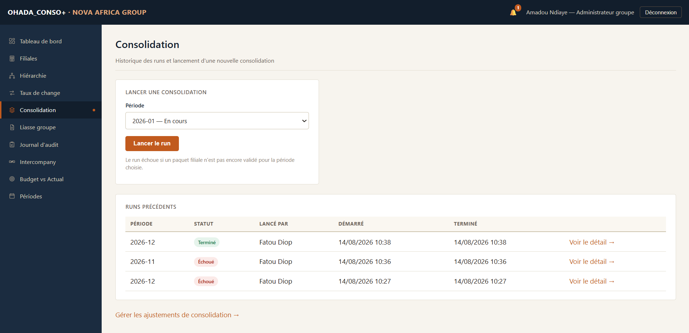
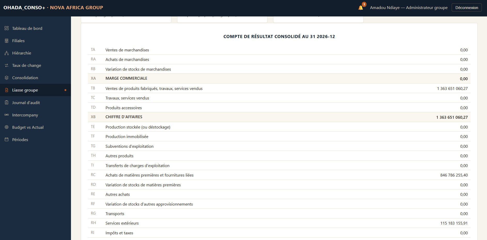
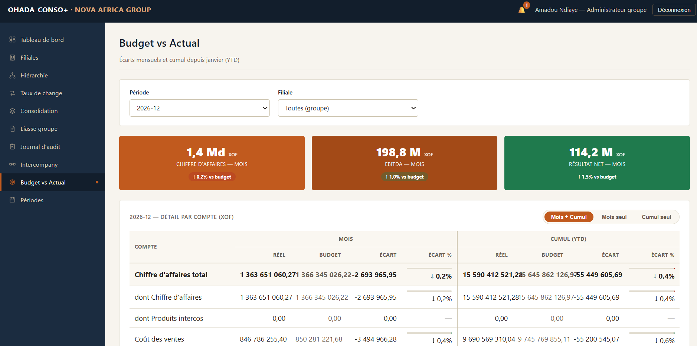
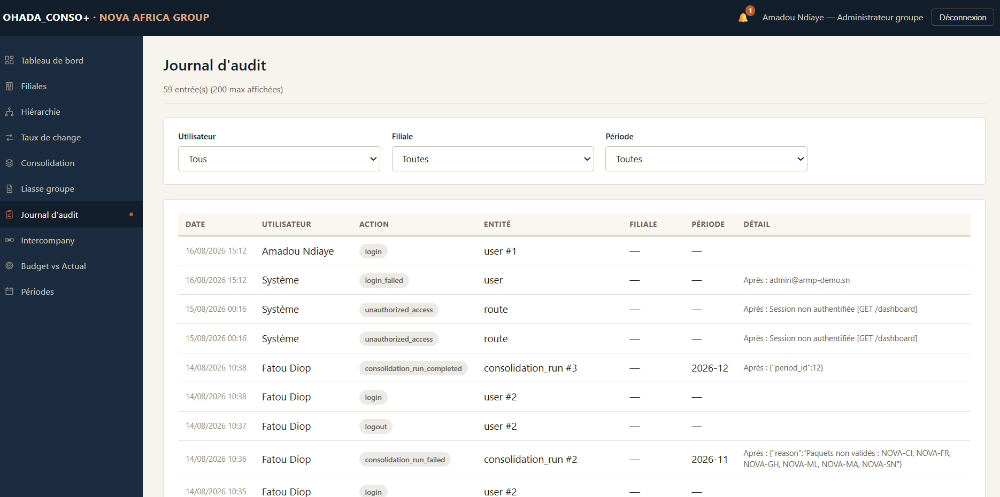

OHADA_CONSO+
et de reporting de groupe
Sommaire
- Prise en main
- Présentation de la plateforme
- Accès et connexion
- Rôles et habilitations
- Repères d'interface
- Cycle de clôture mensuelle
- Périodes de reporting
- Taux de change
- Saisie des données financières
- Workflow de validation
- Opérations intercompany
- Consolidation et restitution
- Moteur de consolidation
- Liasse groupe (états OHADA)
- Tableau de bord de direction
- Budget vs Actual
- Transverse
- Notifications
- Journal d'audit
- Exports
- Annexes
01Présentation de la plateforme
OHADA_CONSO+ centralise le cycle de clôture financière d'un groupe multi-filiales et multi-devises, de la collecte des données jusqu'aux états consolidés publiables.
Le besoin métier
Un groupe présent dans plusieurs pays fait face à quatre difficultés structurelles à chaque clôture :
| Difficulté | Réponse de la plateforme |
|---|---|
| Données dispersées Chaque filiale tient ses comptes de son côté. |
Collecte centralisée par un formulaire unique et normalisé, ou par import CSV. |
| Devises hétérogènes XOF, EUR, MAD, GHS ne s'additionnent pas. |
Conversion automatique en devise de consolidation, au taux moyen pour le compte de résultat et au taux de clôture pour le bilan. |
| Opérations internes Une vente entre deux filiales gonflerait artificiellement le chiffre d'affaires du groupe. |
Rapprochement automatique des déclarations intercompany et élimination des paires cohérentes. |
| Fiabilité et traçabilité Un chiffre publié doit pouvoir être justifié. |
Circuit de validation à deux niveaux, journal d'audit exhaustif, moteur de consolidation dont chacune des sept étapes est journalisée. |
Le périmètre de démonstration
Le groupe NOVA AFRICA GROUP sert de jeu de démonstration. Il illustre volontairement les trois méthodes de consolidation prévues par les normes.
| Entité | Pays | Devise | Détention | Méthode |
|---|---|---|---|---|
| NOVA Holding | Sénégal | XOF | — | Exclue du périmètre |
| NOVA Senegal Retail | Sénégal | XOF | 100 % | Intégration globale |
| NOVA Côte d'Ivoire | Côte d'Ivoire | XOF | 75 % | Intégration globale |
| NOVA Mali | Mali | XOF | 100 % | Intégration globale |
| NOVA Morocco | Maroc | MAD | 100 % | Intégration globale |
| NOVA France | France | EUR | 100 % | Intégration globale |
| NOVA Ghana | Ghana | GHS | 30 % | Mise en équivalence |

La tête de groupe ne dépose pas de liasse propre : elle porte la structure de détention. Le périmètre de consolidation compte donc six filiales, dont cinq en intégration globale et une en mise en équivalence.
Vue d'ensemble du cycle
Chaque étape est décrite en détail dans les chapitres 7 à 12.
02Accès et connexion
Adresse d'accès
La plateforme s'ouvre dans un navigateur à l'adresse fournie par votre administrateur. En installation
locale de démonstration : http://localhost/groupfin/public/

Comptes de démonstration
Tous les comptes de démonstration partagent le mot de passe Groupfin@2026.
| Identifiant | Rôle | Périmètre |
|---|---|---|
admin@novaafrica.com | Administrateur groupe | Groupe |
consolidation@novaafrica.com | Responsable consolidation | Groupe |
cfo@novaafrica.com | Directeur financier | Groupe · lecture seule |
preparer.sn@novaafrica.com | Préparateur | Sénégal |
controller.sn@novaafrica.com | Contrôleur de filiale | Sénégal |
Le même couple preparer.XX@ /
controller.XX@ existe pour ci (Côte d'Ivoire), ml (Mali),
ma (Maroc), gh (Ghana) et fr (France). | ||
Ces identifiants sont réservés à la démonstration. En exploitation réelle, chaque utilisateur dispose d'un compte nominatif et le mot de passe partagé doit être supprimé.
Déconnexion
Le bouton Déconnexion se situe en haut à droite de chaque écran. La session expire automatiquement après une période d'inactivité ; toute action ultérieure renvoie vers l'écran de connexion.
03Rôles et habilitations
Les droits reposent sur deux niveaux cumulatifs : le rôle détermine les fonctions accessibles, le périmètre détermine les données visibles.
| Rôle | Peut faire | Ne peut pas |
|---|---|---|
| Préparateur Filiale |
Saisir et importer les données financières de sa filiale ; soumettre le paquet ; déclarer les opérations intercompany. | Valider son propre paquet ; accéder à une autre filiale. |
| Contrôleur de filiale Filiale |
Valider ou rejeter, avec motif, le paquet soumis par le préparateur de sa filiale. | Modifier les montants saisis ; accéder à une autre filiale. |
| Responsable consolidation Groupe |
Lancer une consolidation ; poster des ajustements ; faire avancer une période ; consulter l'ensemble des filiales. | Créer ou modifier une filiale. |
| Administrateur groupe Groupe |
Tout ce que peut faire le responsable consolidation, plus la gestion de la structure de groupe et des taux de change. | — |
| Directeur financier Groupe · lecture |
Consulter tous les écrans groupe : tableau de bord, liasse, audit, exports. | Toute action de saisie, de validation ou de consolidation. |
Un utilisateur rattaché à une filiale ne peut accéder aux données d'une autre filiale, y compris en modifiant manuellement l'adresse dans le navigateur. Le contrôle est appliqué côté serveur : la tentative est refusée et enregistrée dans le journal d'audit.
Séparation des fonctions
La règle structurante du dispositif : celui qui saisit n'est jamais celui qui valide. Le préparateur produit la donnée, le contrôleur l'approuve. Cette séparation est imposée par la plateforme, elle ne repose pas sur une consigne d'organisation.
04Repères d'interface

Barre supérieure
- Marque
- Rappel de la plateforme et du groupe.
- Cloche
- Accès aux notifications ; la pastille orange indique le nombre de messages non lus.
- Identité
- Nom et rôle de l'utilisateur connecté, suivi du bouton de déconnexion.
Menu latéral
Le menu s'adapte au rôle : un utilisateur de filiale ne voit que les entrées qui le concernent. L'onglet actif est signalé par un liseré orange et une icône colorée.
Filtres dynamiques
Les écrans d'analyse comportent des filtres (période, filiale, pays). Leur modification recalcule l'affichage sans recharger la page. Le bouton « Précédent » du navigateur reste fonctionnel et ramène au filtre précédent.
Conventions d'affichage
| Élément | Signification |
|---|---|
| Vert | Situation favorable ou état validé. |
| Rouge | Situation défavorable, rejet ou écart bloquant. |
| Orange | Point d'attention non bloquant. |
| Bleu | Information ou état intermédiaire. |
| Flèches ↑ ↓ | Sens de l'écart par rapport au budget. La couleur seule n'est jamais le seul signal : une flèche et une valeur chiffrée l'accompagnent systématiquement. |
05Périodes de reporting
Chaque mois constitue une période dont le cycle de vie est strictement séquentiel : aucun saut d'étape, aucun retour en arrière.

Seuls l'administrateur groupe et le responsable consolidation peuvent faire avancer une période. Les autres rôles y ont accès en lecture, ce qui leur permet de connaître l'état d'avancement de la clôture.
Une période clôturée est définitive : plus aucune saisie n'y est possible, y compris sur les taux de change. Cette opération n'est pas annulable depuis l'interface.
Bascule automatique d'exercice
Lorsque les douze mois d'une année sont tous clôturés, la plateforme ouvre automatiquement l'exercice suivant :
- création des douze périodes de l'année N+1 au statut Ouverte ;
- reprise des taux de change de décembre N sur les douze nouveaux mois, à titre de valeurs de départ ;
- notification des rôles groupe et inscription au journal d'audit.
Les taux repris de décembre ne sont qu'un point de départ destiné à ne pas bloquer la première saisie en devise étrangère. Ils doivent être actualisés mois par mois dès l'ouverture de l'exercice.
06Taux de change
La conversion en devise de consolidation repose sur deux taux distincts par devise et par période. Cette distinction est une exigence des normes de consolidation, pas un choix technique.
| Taux | Appliqué à | Justification |
|---|---|---|
| Taux moyen | Compte de résultat et flux de trésorerie | Ces états retracent des flux étalés sur toute la période : un taux moyen les représente plus fidèlement qu'un taux ponctuel. |
| Taux de clôture | Bilan | Le bilan est une photographie à une date donnée : il se convertit au taux de cette date. |

Convertir le résultat au taux moyen et le bilan au taux de clôture génère mécaniquement un écart de conversion. La plateforme l'isole sur les lignes prévues à cet effet par le référentiel OHADA (BU à l'actif, DV au passif) et ne l'impute jamais au résultat net, qui reste identique entre le compte de résultat et le bilan.
Une filiale dont le taux serait manquant est exclue de l'agrégation plutôt qu'estimée : la consolidation échoue explicitement en indiquant la devise concernée.
07Saisie des données financières
Écran réservé au préparateur de la filiale. Il couvre les trois états : compte de résultat, bilan et flux de trésorerie.

Contrôle d'équilibre bilanciel
La plateforme vérifie en permanence l'équation fondamentale :
Actif = Passif + Capitaux propres + Résultat netUn déséquilibre bloque l'enregistrement et affiche l'écart chiffré ainsi que les deux termes comparés. Aucun paquet déséquilibré ne peut entrer dans le système, ni a fortiori être soumis.

Contrôle de vraisemblance
Une variation du chiffre d'affaires supérieure à 50 % par rapport au mois précédent déclenche un avertissement. Contrairement au contrôle d'équilibre, celui-ci est non bloquant : une forte variation peut être parfaitement légitime. Il invite simplement à vérifier avant de soumettre.
Import CSV
Alternative à la saisie manuelle pour les filiales disposant d'un extracteur comptable.
- Format attendu : deux colonnes
account_code,amount, avec ligne d'en-tête. - Le fichier peut ne couvrir qu'une partie des comptes.
- Les lignes valides sont appliquées immédiatement ; les lignes invalides sont rapportées avec leur numéro de ligne et n'empêchent pas le traitement des autres.
Dès qu'un paquet quitte l'état Brouillon, le formulaire passe en lecture seule. Il ne redevient modifiable qu'après un rejet du contrôleur.
08Workflow de validation
Circuit d'approbation à deux acteurs, dont chaque transition est horodatée et attribuée.
Côté préparateur
- Compléter les 22 comptes et obtenir le bandeau Bilan équilibré.
- Cliquer sur Soumettre pour validation. Le bouton n'apparaît que si le paquet est complet et équilibré : la validation est rejouée au moment de la soumission.
- En cas de rejet, corriger les montants signalés puis soumettre de nouveau. Le nombre d'allers-retours n'est pas limité.
Côté contrôleur

- Valider le paquet — la filiale entre dans le périmètre consolidable de la période.
- Rejeter — le motif est obligatoire. Il s'affiche en bandeau chez le préparateur, qui retrouve la main sur son formulaire, et une notification lui est adressée.
Historique
Le bas de l'écran de saisie retrace l'intégralité des transitions du paquet : date, utilisateur, transition et commentaire. Cet historique est immuable.

09Opérations intercompany
Les opérations entre filiales du groupe doivent être neutralisées : sans cela, une vente interne gonflerait le chiffre d'affaires consolidé sans qu'aucun euro ne soit entré dans le groupe.
Principe déclaratif
Chaque filiale déclare ses opérations de son côté. La plateforme recherche la déclaration miroir et rapproche automatiquement les deux versions.
| Déclaration d'une filiale | Contrepartie attendue |
|---|---|
| Créance | Dette |
| Produit | Charge |
| Dividende | Déclaration unilatérale (versement) |
Statuts de rapprochement
| Statut | Signification | Traitement en consolidation |
|---|---|---|
| En attente | La contrepartie n'a pas encore déclaré. | Aucune élimination. |
| Rapproché | Les deux montants concordent après conversion. | Élimination automatique. |
| Écart | Les montants diffèrent. | Aucune élimination ; l'écart est signalé dans le journal du run. |

Un écart n'est jamais éliminé silencieusement. Le forcer reviendrait à masquer une divergence réelle entre deux comptabilités. Il est signalé, notifié aux deux contrôleurs et au responsable consolidation, et sa résolution passe par une correction en filiale ou par un ajustement de consolidation explicite et motivé.
10Moteur de consolidation
Le lancement d'une consolidation exécute une chaîne de sept étapes, chacune journalisée avec son résultat détaillé.
Conditions préalables
Le run ne démarre que si toutes les filiales du périmètre sont au statut Validé pour la période. Dans le cas contraire, il s'interrompt à la première étape en listant nommément les filiales manquantes.
Les sept étapes
| # | Étape | Traitement |
|---|---|---|
| 1 | Vérification du périmètre | Contrôle que chaque filiale en intégration globale ou en mise en équivalence est validée. |
| 2 | Conversion et agrégation | Conversion de chaque filiale en devise de consolidation (taux moyen pour le résultat, taux de clôture pour le bilan), puis somme compte par compte. |
| 3 | Éliminations intercompany | Neutralisation des paires rapprochées. Les écarts sont laissés en l'état et signalés. |
| 4 | Élimination des dividendes | Neutralisation des dividendes versés entre filiales du périmètre. |
| 5 | Mise en équivalence | Intégration de la quote-part de résultat et des titres pour les participations non contrôlées. |
| 6 | Ajustements de consolidation | Application des écritures manuelles postées pour la période. |
| 7 | Intérêts minoritaires | Répartition du résultat et des capitaux propres entre part du groupe et part des actionnaires minoritaires. |


Ajustements de consolidation
Écritures manuelles destinées aux retraitements que le moteur ne peut pas déduire : régularisation d'un écart intercompany, homogénéisation d'une méthode comptable, correction ponctuelle. Chaque ajustement exige un motif obligatoire, est tracé dans le journal d'audit, et n'est pris en compte qu'au run suivant.
Une consolidation peut être relancée autant de fois que nécessaire sur une même période. Chaque run est conservé avec son horodatage et son auteur ; les écrans de restitution s'appuient sur le dernier run abouti.
11Liasse groupe — états OHADA
Restitution des états financiers consolidés au format normalisé OHADA/SYCEBNL, référentiel comptable en vigueur dans dix-sept pays d'Afrique de l'Ouest et Centrale.

Soldes intermédiaires de gestion
Le compte de résultat est structuré par les soldes normalisés, identifiés par leur code de référence :
| Code | Solde |
|---|---|
XA | Marge commerciale |
XB | Chiffre d'affaires |
XC | Valeur ajoutée |
XD | Excédent brut d'exploitation |
XE | Résultat d'exploitation |
XF | Résultat financier |
XG | Résultat des activités ordinaires |
XH | Résultat hors activités ordinaires |
XI | Résultat net |
Bilan
Présenté en deux volets, actif (codes AD à BZ) et passif (codes CA à
DZ). Les deux totaux généraux, BZ et DZ, sont rigoureusement égaux.

Le résultat net est toujours identique entre le compte de résultat (XI) et le bilan
(CJ). Il n'est jamais utilisé comme variable d'ajustement : un écart entre ces deux lignes
serait immédiatement identifié comme une anomalie par un comptable.
Exports
- CSV — les trois états en un fichier, structuré en sections, directement exploitable dans un tableur.
- PDF — mise en page dédiée à l'impression, sans navigation, avec en-tête de document.
12Tableau de bord de direction
Vue de pilotage destinée au comité de direction, filtrable par période, pays et filiale.

Composants
- Indicateurs clés
- Chiffre d'affaires, EBITDA, résultat net et marges, chacun avec son écart au budget.
- Alertes
- Paquets non validés, écarts budgétaires significatifs, écarts intercompany, disponibilité d'une consolidation.
- Tendance
- Évolution sur douze mois des trois agrégats principaux.
- Répartition
- Poids de chaque filiale, avec bascule entre chiffre d'affaires et EBITDA.
- Contribution
- Apport de chaque filiale à l'EBITDA du groupe.
- Performance
- Tableau détaillé par filiale : réalisé, écart au budget, marge, résultat.
- Situation bilancielle
- Total bilan, capitaux propres et ratio d'endettement, issus du dernier run officiel.
Les indicateurs du tableau de bord relèvent d'une vision cumulée : somme des filiales en intégration globale, hors éliminations intercompany et hors mise en équivalence. Elle est disponible pour tous les mois, y compris ceux n'ayant pas fait l'objet d'un run.
Le résultat consolidé officiel est celui produit par un run de consolidation, présenté au chapitre 11. Le panneau « Situation bilancielle groupe » n'apparaît d'ailleurs qu'une fois ce run réalisé — la plateforme n'affiche jamais un chiffre consolidé qu'elle n'a pas réellement calculé.
13Budget vs Actual
Suivi budgétaire compte par compte, sur le mois sélectionné et en cumul depuis janvier.

Lecture des écarts
Le sens favorable d'un écart dépend de la nature du compte :
| Nature | Écart favorable |
|---|---|
| Produit (chiffre d'affaires…) | Réalisé supérieur au budget |
| Charge (achats, personnel…) | Réalisé inférieur au budget |
La barre affichée dans la colonne d'écart traduit l'ampleur de la divergence, saturée au-delà de 30 % ; la couleur en indique le sens.
Les boutons Mois seul et Cumul seul réduisent l'affichage à la période souhaitée, ce qui facilite la lecture en réunion ou en projection.
14Notifications
La plateforme informe automatiquement les acteurs concernés à chaque événement significatif.
| Événement | Destinataires |
|---|---|
| Soumission | Contrôleur de la filiale concernée. |
| Rejet | Préparateur de la filiale, avec le motif. |
| Écart intercompany | Les deux contrôleurs concernés et le responsable consolidation. |
| Consolidation terminée | Rôles groupe : administrateur, responsable consolidation, direction financière. |
| Exercice ouvert | Rôles groupe, à la bascule automatique d'exercice. |
La cloche de la barre supérieure affiche le nombre de messages non lus. L'écran Notifications permet de les marquer lus individuellement ou en totalité.
15Journal d'audit
Registre exhaustif et non modifiable de toutes les actions effectuées dans la plateforme. Accessible aux seuls rôles groupe.

Contenu d'une entrée
- Horodatage et utilisateur à l'origine de l'action ;
- nature de l'action et entité concernée ;
- valeur avant et valeur après pour toute modification ;
- filiale et période de rattachement.
Les filtres par utilisateur, filiale et période sont combinables. Sont notamment journalisés : les connexions échouées, les tentatives d'accès refusées, les transitions de workflow, les modifications de structure et de taux, les ajustements et les runs de consolidation.
16Exports
| Export | Contenu | Format |
|---|---|---|
| Liasse groupe | Compte de résultat et bilan consolidés au format OHADA, tels qu'affichés à l'écran. | CSV · PDF |
| Run de consolidation | Montants consolidés compte par compte, pour analyse détaillée. | CSV |
| Paquet filiale | Les 22 comptes saisis pour une filiale et une période. | CSV |
| Vue tableau de bord | Indicateurs de la sélection courante, filtres appliqués. | CSV · PDF |
Format des fichiers CSV
Séparateur point-virgule et encodage UTF-8 avec marque d'ordre d'octets : les fichiers s'ouvrent directement dans un tableur en configuration française, avec les accents correctement restitués et sans assistant d'importation.
Génération des PDF
Les exports PDF utilisent la fonction d'impression du navigateur. Sélectionner « Enregistrer au format PDF » comme destination. Une feuille de style dédiée masque la navigation, ajoute un en-tête de document et évite les coupures de page au milieu d'un tableau.
17Annexes
A. Glossaire
| Terme | Définition |
|---|---|
| Consolidation | Production d'états financiers présentant un groupe de sociétés comme une entité économique unique. |
| Intégration globale | Méthode appliquée aux filiales contrôlées : reprise de 100 % des comptes, la part des actionnaires externes étant isolée en intérêts minoritaires. |
| Mise en équivalence | Méthode appliquée aux participations sans contrôle : seule la quote-part de situation nette et de résultat est reprise. |
| Intérêts minoritaires | Part du résultat et des capitaux propres revenant aux actionnaires externes d'une filiale non détenue à 100 %. |
| Intercompany | Opération réalisée entre deux entités du même groupe, à neutraliser en consolidation. |
| Écart de conversion | Différence née de l'application de deux taux distincts (moyen et clôture) aux états d'une filiale en devise étrangère. |
| EBITDA | Résultat avant intérêts, impôts, dotations aux amortissements et provisions. |
| YTD | Year to date — cumul depuis le début de l'exercice. |
| OHADA / SYCEBNL | Référentiel comptable harmonisé applicable dans dix-sept États d'Afrique de l'Ouest et Centrale. |
B. Résolution des situations courantes
| Situation | Cause et résolution |
|---|---|
| Le bouton « Soumettre » n'apparaît pas. | Le paquet est incomplet ou déséquilibré. Compléter les comptes manquants jusqu'à obtenir le bandeau Bilan équilibré. |
| Impossible de modifier un montant. | Le paquet a été soumis ou validé. Le contrôleur doit le rejeter pour rendre la main au préparateur. |
| La consolidation refuse de démarrer. | Une filiale du périmètre au moins n'est pas validée. Le message d'erreur les liste nommément. |
| Un écart intercompany persiste après le run. | Comportement attendu : seules les paires rapprochées sont éliminées. Corriger la déclaration divergente ou poster un ajustement de consolidation motivé. |
| La liasse groupe est vide. | Aucun run de consolidation n'a encore abouti sur la période sélectionnée. |
| Une période n'accepte plus aucune saisie. | Elle est clôturée. Cette opération est définitive. |
| Accès refusé sur un écran. | Le rôle ou le périmètre ne l'autorise pas. La tentative est enregistrée au journal d'audit. |
C. Plan de comptes
La saisie repose sur un plan de comptes de 22 lignes couvrant les trois états. Deux comptes supplémentaires
(EQ_METHOD_INCOME et EQ_METHOD_INVESTMENT) sont calculés par le moteur de
consolidation et ne sont pas saisissables.
D. Documentation complémentaire
| Document | Objet |
|---|---|
GUIDE_DE_TEST.md | Parcours de test guidé, étape par étape. |
docs/CONSOLIDATION_LOGIC.md | Formules, conventions de signe et justification des choix de conception. |
TECHNICAL_DOCUMENTATION.md | Architecture, sécurité, modèle de données. |
README.md | Installation et démarrage. |